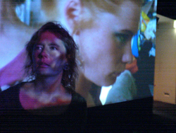

embodied mind, cognition, emotion, enactive cinema, generative narrative, simulation, psycho-physiological sensory interface, integrated senses, interdisciplinary cross-overs The OBSESSION team introduces a novel kind of interactive cinema genre described as enactive cinema: How the narrative unfolds, depends on how the spectator experiences the emotional dynamics between the characters. In Obsession's core the Eisensteinian ”montage-machine” based on a narrative logic matches cinematic content with spectators’ psycho-physiological states. The spectator’s unconscious emotional experience is connected to the installation’s real-time biosensitive montage-dynamics. In this manner enactive cinema enables fully immersive interactive cinema experience.
Abstract I introduce my interdisciplinary view to cinema as a model system for describing mind. I'm inspired by Antonio Damasio's approach (1999) to emotions and the conscious self. Damasio harnesses "movie" as a metaphor for the integrated unified composite of sensory images, visual, auditory, tactile, olfactory - the multimedia-show he calls mind. Assuming emotion as the foundation of any cognitive act, I discuss cinema as a metaphoric externalization of the embodied mind. A novel dialogue is created between the contemporary philosophy of embodied mind by George Lakoff and Mark Johnson (1999), and the practice-based cinematic thinking of Russian film director Sergei Eisenstein, dating from the fist half of the 20th century. Dynamic emotion ecology describes an interactive dialogue between the spectator and the artwork. A landscape of potential worlds emerges from interpreting and anticipating experiences of the characters. Obsession suggests that unconscious and conscious experience interact in an inseparable and complex manner, and that emotions form the fundamental basis of cognition. The cinema experience is more than seeing and hearing. It is about sensing and re-living of one's own experience in what happens to the "others" - ENACTIVE CINEMA. The presentation will also describe, how the work Eisenstein did in order to construct an organic unity of cinematic form, has served as a point of departure for modeling ENACTIVE CINEMA INSTALLATION OBSESSION. Installation, which had its premier in the Museum of Contemporary Art KIASMA, Helsinki (10.6.-21.8.2005) concretizes the presentation of my theoretical work. In the middle of the four screen walls the psycho-physiological interface of five 360* rotating chairs measure the unconscious reactions of the spectator. The emotional reactions have effect on the narrative, provoking a circuit of continuous interaction with the spectator and the narrative space. The computational core of Obsession is a narrative engine, based on content metadata (Tikka, Vuori & Kaipainen (c) 2003). The "montage-machine" of Obsession maps spectators' psycho-physiological states to cinematic elements. References (selection):
Damasio, A. 1999. Feeling of What Happens. Harcourt Brace & co.
Eisenstein, S. 1987. Nonindifferent Nature: Film and the Structure of Things. Translated by Herbert Marshall. Cambridge University Press.
Lakoff, G.; Johnson, M. 1999. Philosophy in the Flesh: The Embodied Mind and it's Challenge to Western Thought. New York: Basic Books
Varela, F.; Thompson, E.; Rosch, E. 1991. Embodied mind: Cognitive science and human experience. Cambridge, MA: MIT Press URLS:
http://crucible.lume.fi/obsession |